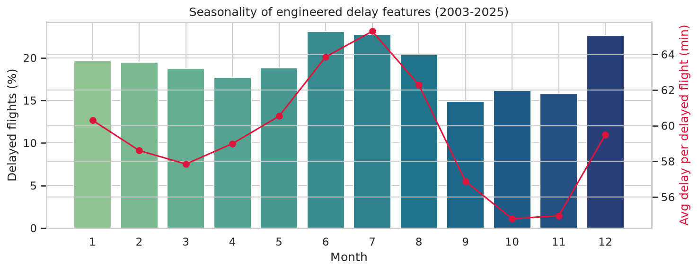
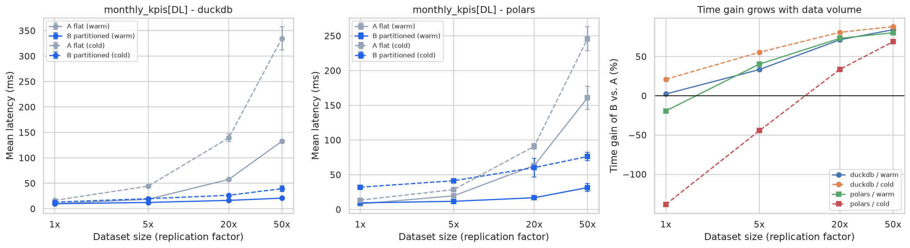

Od surowego CSV do zoptymalizowanej hurtowni Parquet
10 reguł jakości danych
18 nowych kolumn
carrier=XX/, Snappy
plik płaski vs. partycje
z 398 233 surowych wierszy
264,7 ms → 11,8 ms dla zapytania z zadania
3,97 MB → 0,32 MB dzięki partition pruning
Anomalie biznesowe i telemetryczne
| Typ | Reguła | Wiersze |
|---|---|---|
| biznes | Brakujące pomiary (puste miesiące) | 950 |
| biznes | Ujemne minuty opóźnienia | 2 |
| biznes | Składniki opóźnienia nie sumują się do całości | 12 |
| telemetria | Żaden lot się nie odbył (wszystkie odwołane lub przekierowane) | 448 |
| telemetria | Ponad 24 h opóźnienia na opóźniony lot (np. 53 h) | 5 |
Cztery pozostałe reguły (np. więcej opóźnionych lotów niż wszystkich) nie znalazły naruszeń.
| Surowe CSV | 398 233 |
| Po regułach biznesowych | 397 271 (−962) |
| Po regułach telemetrycznych | 397 111 (−160) |
Przykłady z zadania przenieśliśmy na dane lotnicze: ujemne minuty opóźnienia zamiast ujemnych napiwków, miesiące bez lotów zamiast kursów krótszych niż minuta.
18 nowych kolumn, każda sprawdzona drugi raz
| Cecha | Znaczenie |
|---|---|
| avg_delay_minutes_per_delayed_flight | średnie opóźnienie opóźnionego lotu (odpowiednik trip_duration) |
| period_start, quarter, season | czas (odpowiednik pickup_hour; dane są miesięczne) |
| is_peak_travel_month, is_covid_period | wakacje i grudzień; III 2020 – XII 2021 |
| delay_rate, cancellation_rate | udział lotów opóźnionych i odwołanych |
| dominant_delay_cause | przyczyna z największą liczbą minut |
0 niezgodności Każdą cechę policzyliśmy drugi raz, w SQL w DuckDB: 13 testów × 397 111 wierszy.

Układ Hive carrier=XX/ z kompresją Snappy
Kolumna carrier istnieje tylko w nazwie katalogu. Asercje w notatniku: 38 katalogów, kompresja Snappy, 397 111 wierszy po odczycie.
| Klucz | Partycje | Śr. plik | Ocena |
|---|---|---|---|
| carrier | 38 | ~900 KB | wybrany |
| year | 23 | ~1,5 MB | inny wzorzec zapytań |
| airport / carrier + year | 420 / 439 | ~80 KB | za małe pliki |
-
Raporty punktualności i porównania linii filtrują po przewoźniku.
-
38 wartości to mało katalogów i pliki, które nie są za małe.
-
Dostęp dla analityków jednej linii to jeden prefiks carrier=XX/.
Jak mierzyliśmy, żeby wynik był wiarygodny
-
A – plik płaski: każda grupa wierszy zawiera wszystkich przewoźników, więc zapytanie czyta cały plik.
-
B – partycje: filtr na przewoźniku wybiera katalog (DuckDB: Scanning Files: 1/38).
-
A′ – kontrola: jeden plik posortowany jak B. Dla niego liczymy, ile danych czyta zapytanie (slajd 8).
-
2 silniki: DuckDB (SQL) i Polars (lazy API).
-
7 scenariuszy, w tym zapytanie kontrolne bez filtra, któremu partycje nie mogą pomóc.
-
Cache ciepły i zimny: w trybie zimnym przed każdym pomiarem usuwamy pliki z pamięci systemu.
-
20 powtórzeń w losowej kolejności. Przed pomiarem sprawdzamy, że A i B zwracają ten sam wynik.
-
Zysk czasu = (A − B) / A na średniej z przebiegów.
Na 34 MB partycjonowanie prawie nie przyspiesza
| Silnik / cache | A [ms] | B [ms] | Zysk |
|---|---|---|---|
| DuckDB / ciepły | 10,6 | 10,4 | +2% |
| DuckDB / zimny | 20,7 | 16,1 | +22% |
| Polars / ciepły | 8,5 | 10,0 | −18% |
| Polars / zimny | 14,5 | 40,3 | −178% |
-
Cały plik A to ~4 MB, czytane w kilka ms. O czasie decydują stałe koszty: otwarcie plików i odczyt stopek.
-
DuckDB otwiera tylko carrier=DL/. Polars najpierw czyta stopki wszystkich 38 plików (32 ms na zimno).
-
−598% dla AA+DL+UA: Polars rozbija GROUP BY po kolumnie partycji na 38 podplanów.

Zapytanie kontrolne bez filtra jest na B wolniejsze wszędzie, czego się spodziewaliśmy.
Przy milionach wierszy partycje wygrywają wyraźnie

-
A rośnie liniowo, B czyta tylko partycję DL. Przy 50× (20 mln wierszy) DuckDB na zimno: 335 ms → 40 ms.
-
Próg opłacalności: ok. 2 mln wierszy (5×) dla DuckDB i Polars z ciepłym cache; Polars z zimnym dopiero ok. 8 mln (20×).
Mniej czytanych danych, głównie dzięki sortowaniu
Sam plik posortowany po przewoźniku czyta o 87% mniej, partycje o 92%. Przy 20 mln wierszy różnica maleje do 90% vs 91%.
| Dane | A | A′ | B |
|---|---|---|---|
| rzeczywiste (34 MB) | $1,89 | $0,24 | $0,15 |
| 50× (20 mln wierszy) | $95,45 | $9,29 | $8,58 |
Liczone ze stopek plików Parquet, więc wynik nie zależy od cache ani od maszyny. Zapytanie bez filtra nic nie zyskuje.
Pominięte partycje nie wymagają czytania stopek, uprawnienia nadaje się per prefiks, a partycję usuwa się razem z folderem.
Partycje zajmują 4–12% więcej miejsca niż plik płaski, bo każdy z 38 plików ma własne słowniki i stopkę.
Klucz airport dałby 420 plików po ~80 KB. Na S3 każdy plik to osobne, płatne żądanie.
Prezentacja z surowych wyników, nie z narracji notatnika
Notatnik zapisuje tabele do CSV i jednego pliku TXT bez komentarzy (presentation/results/).
Te same komórki eksportują wykresy PNG (presentation/figures/).
Z pliku TXT, notatnika i wykresów powstaje prezentacja HTML z eksportem do PDF.
Wnioski i trudności
-
Czyszczenie usuwa tylko 0,28% wierszy, ale właśnie te, które psują średnie.
-
Partycje zmniejszają czytane dane o ~90%, ale prawie tyle samo daje posortowanie jednego pliku.
-
Na 34 MB czas zależy od silnika (DuckDB zyskuje, Polars traci). Przy milionach wierszy partycje wygrywają.
-
Brak znaczników czasu w BTS: cechy z zadania przenieśliśmy na miesiące.
-
Cache: bez usuwania plików z pamięci i wyłączenia cache DuckDB pomiary na zimno nic nie znaczą.
-
Powielanie danych: identyczne kopie obok siebie kompresują się lepiej i dawały fałszywe „−30% miejsca”. Wykrył to dopiero posortowany plik kontrolny.
-
Pułapka pyarrow: nieposortowane dane dały 276 grup wierszy i zbiór większy o 22%.